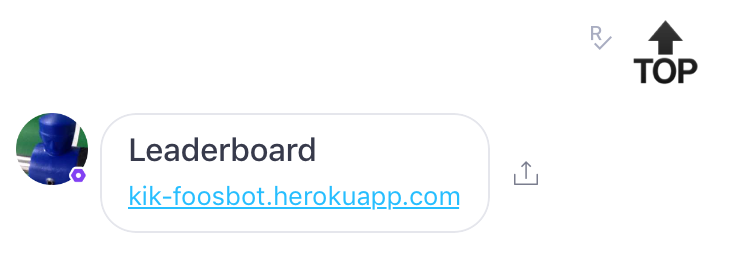

If you were unable to view the prototype above, you can find it also here:
Foosbot was a chatbot co-designed during my work with Michael Shimokura at Kik Messenger in the Fall of 2015.
At Kik, Foosball was one of the unifying games among interns and employees during work breaks. Sometimes, however, due to the varying working schedules of each individual, we found that we did not know who was free to play foosball without distracting other employees.
Chatbots are bots that you can chat with which will reply back with pre-determined responses based on your input, or if backed by an artificial intelligence engine, reply to contextually. As messaging is the main interface for communicating with employees in real time, it would make sense to reach out to the same people using the same medium. As a result Foosbot was born.
You can chat with a bot using typed responses, but what’s really unique about Kik when we first released chatbots was the ability to have the user click on pre-determined responses that send immediately. As interns, we were lucky enough to be the first to play with and research how users can interact with chat before the feature fully released to the public.
Foosbot was our prototype for enabling employees to find other people who also wanted to play foosball without distracting others.
We thought about what was important for a Foosball chatbot and finding people. In our initial brainstorming, we thought 2v2 was the most fun match up type, so for the initial prototype we designed around getting 2v2 match up going. A queuing system needed to be built, along with a leaderboard to gamify our bot for the extra incentive to make players get better.
We thought having words as pre-determined buttons took too much space and was not a good interface for a queuing application. Instead, as young interns we thought using emojis conveying simple actions would be a much better and useful idea. Emoji's are used at a much higher rate for teenagers than other older demographics. [1]
A soccer ball or play button could indicate a start of the queue, or emoji happy faces could even represent a rating system on how well a user thought the game was going. Lastly, because emoji's are a universal standard across different platforms, using their unicode once applies their design everywhere. There are slight differences in the visual design of emojis between iOS and Android.
In the end we ended up with these emojis for our interface:
State 1: Queue or Check Leaderboard
A soccer ball allows you to enter the queue. Top allows a user to view the leaderboard. A question mark allows the user to determine who is in the queue. A cancel emoji indicates cancel.
State 2: Cancel Queue or Check Queue or Check Leaderboard
Once a user is in the queue, they can either leave or check the leaderboard for their own pleasure. It was decided only one action should bring the user back out of the state, and it will always bring them back to state 1.
State 3: We Won or We Lost or Cancel Game
Once four people are in the queue, the bot responds with draw probability based on the users' previous rank. If they are unranked, a default skill of 25 is used (Microsoft's TrueSkill Algorithm) for it's calculation.
Below is a sample of entering a queue and exiting the queue:
If the bot does not recognize input sent by the user, it responds with a confused emoji and gives the user pre determined emoji confused face in chat. This message should be changed to be text based because it was a confusing error message to our initial users.
Finally the leaderboard is displayed above. The TrueSkill rating is there to encourage people to play and compete playfully with each other in the office.
Having a legend of emoji to action can help the user navigate our interface without needing to click the responses and seeing how the bot reacts. With our sample size of around 25 users, none have reported issues navigating or queuing for foosball and have continued to compete to become the best Kik Foosball player.
By doing formal user testing such as an SUS survey given at the end, or doing user interviews, more issues relating to navigation can rise up to the top. Considering the simplicity of the interface and development time, it was determined that this would be the next step to bring the chatbot to the masses.
[1] http://www.businessinsider.com/how-teens-use-emojis-to-talk-2013-10